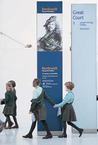

|
|
|
|
Non esiste un modo giusto o sbagliato per visitare il British Museum. Ad ogni visita non si mancherà di scoprire qualcosa di nuovo. Vogliamo che tutti possano visitare con comodità il Museo ed accedere facilmente alle informazioni sulle collezioni e le strutture che offre. Le piante dei piani mostrano l'ubicazione di tutte le gallerie e i servizi e rappresentano il modo più facile per aiutare i visitatori ad orientarsi. Una visita generale che comprenda almeno alcune delle aree del Museo - antichità e culture antiche, temi storici e culture viventi - richiederà circa tre ore. Se si dispone di più tempo, ci si può fermare ad ascoltare una presentazione di una delle gallerie, oppure assistere ad uno dei numerosi eventi in programma. Se invece non si ha molto tempo a disposizione, è meglio concentrarsi su una sola area, esplorandola in tutti i particolari, oppure prendere parte ad una visita guidata. Non c'è un percorso consigliato vero e proprio per visitare il Museo, anzi molti visitatori tendono a girarlo a caso, imbattendosi in tanti oggetti interessanti. Per alcune delle gallerie sono disponibili delle guide stampate (per cui si richiede cortesemente un'offerta di 50 pence). La maggior parte dei visitatori inizia la visita dal nuovo centro del Museo, il Queen Elizabeth II Great Court. Da qui cartelli chiari indicano la direzione alle varie aree delle collezioni del British Museum: Africa, Vicino Oriente Antico, Asia, Egitto, Grecia e Roma, Americhe, Monete, Stampe e disegni, Preistoria, la Gran Bretagna ai tempi di Roma e l'Europa. Ogni galleria è contrassegnata da un nome e da un numero. Se serve aiuto per trovare un oggetto particolare, i custodi delle gallerie sono a completa disposizione. I custodi sono riconoscibili dal distintivo e dalla caratteristica divisa blu. Se si preferisce esplorare nei dettagli un'area specifica, ci si può unire ad una visita guidata eyeOpener Tour oppure si può assistere ad una presentazione Spotlight. Le famiglie con bambini preferiranno forse seguire uno dei percorsi di visita più apprezzati, studiati appositamente per i bambini. Per informazioni su questi percorsi, rivolgersi al Banco informazioni. Tutte le indicazioni al Museo sono in lingua inglese, tuttavia presso i negozi del Museo sono disponibili guide souvenir illustrate in otto lingue diverse, al prezzo di 6 sterline ciascuna. I negozi offrono anche un vasto assortimento di articoli regalo e libri con informazioni sulle collezioni del Museo e sulle culture che le hanno create.
|
 |

Informazioni
pratiche
| Come
organizzare la visita
| Le
collezioni del British Museum
Visite guidate |
Punti
salienti delle collezioni
| Il
British Museum: brevi cenni storici
Il
Great Court
| La
Reading Room